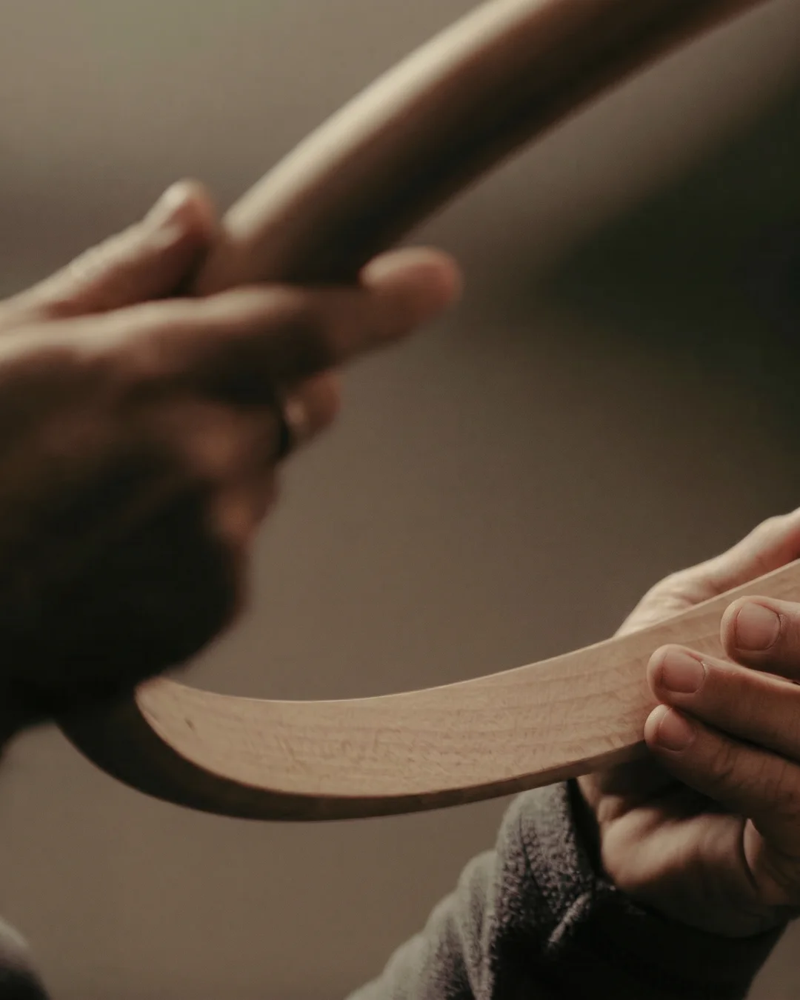
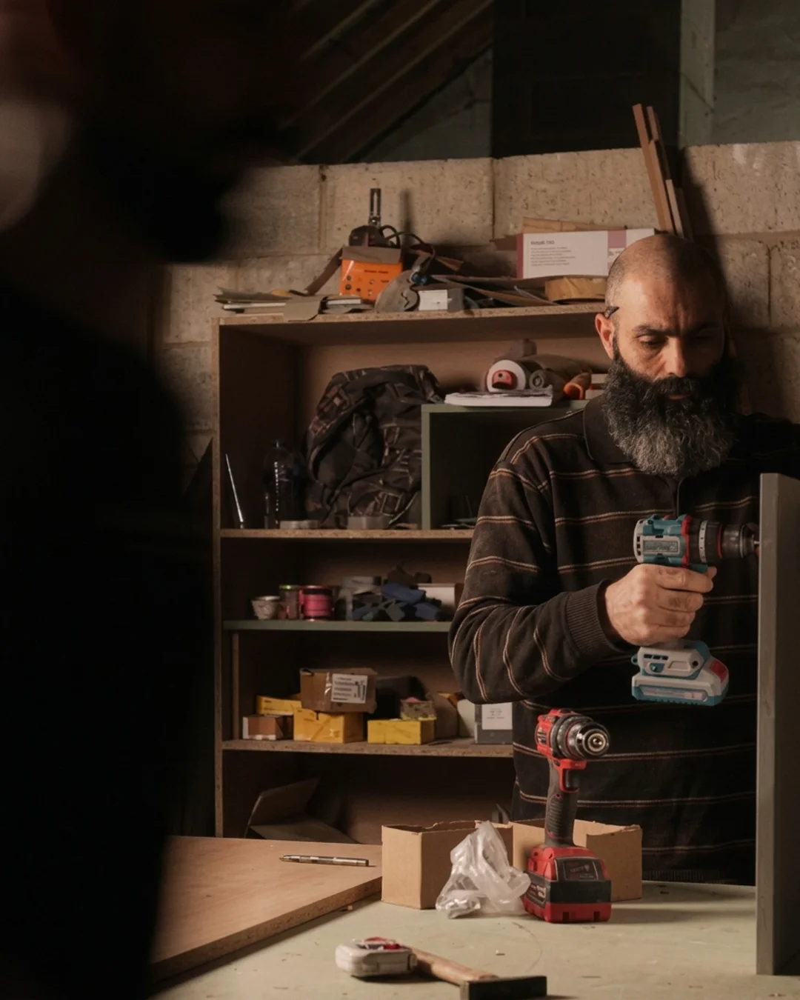
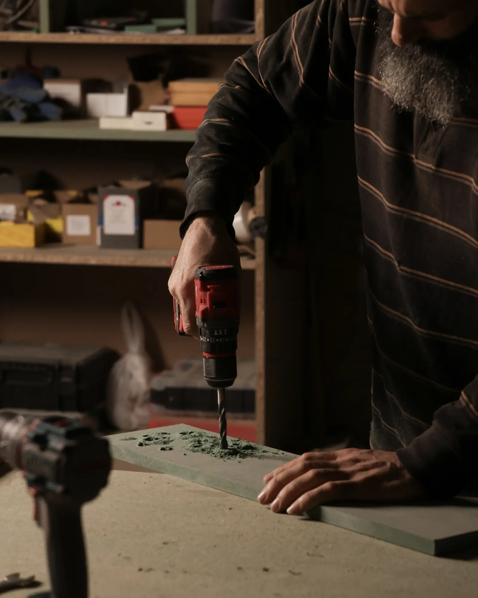
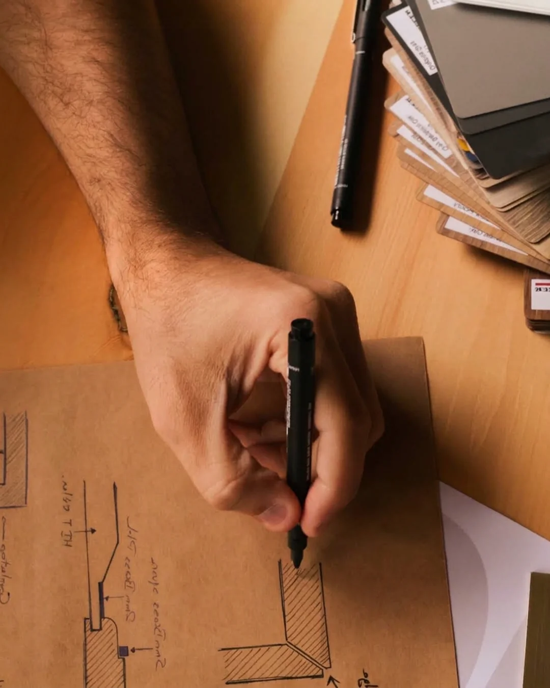
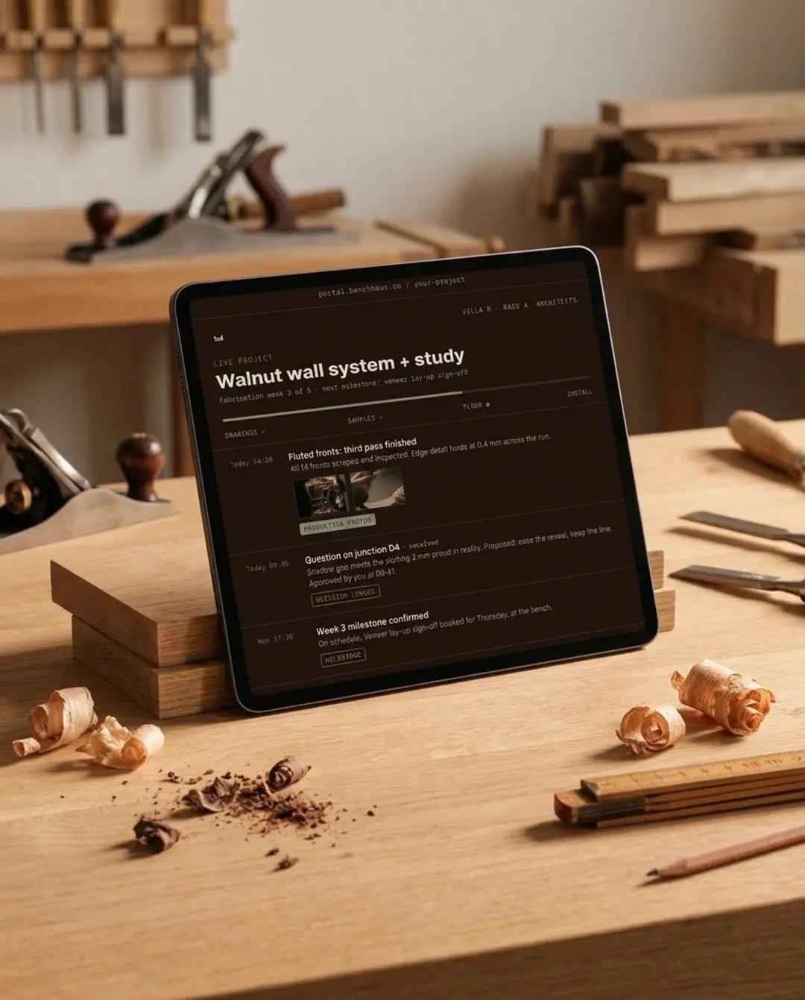

Fabrication partner · Lebanon
Your vision, built as drawn.
For architects and designers · The details you fight for are the ones we protect.
Luxury is not another adjective. It is peace of mind: knowing the drawing you fought for and the piece that arrives on site are the same object. Contractors build the space. We build the detail layer. And we protect it the whole way.
How a project
runs here.
Five steps, none of them optional. This is the discipline that makes “built as drawn” a promise instead of a slogan.
The table read
We go through your drawings together, every section, every junction, and flag every ambiguity before it costs money. Questions asked at the table are free. The same questions asked on site are not.
Samples first
Materials, finishes, and joints approved in hand, not imagined from a screen. You sign off on the actual veneer, the actual sheen, the actual edge, before a single panel is cut.

Fabrication
The floor our master carpenter runs. Tolerances are held, not guessed. When a drawing meets a reality it didn’t anticipate, you hear about it the same day, with options.
You always know
Progress updates with photos at agreed milestones. No chasing, no silence, no surprises. If you have ever had to babysit a workshop, this step is for you, so you never have to again.

Install and handover
Finished on site to the same bar as the bench. The piece isn’t done when it leaves the workshop. It’s done when it sits in your space exactly as drawn, and you’d sign it.
Three things nobody else
combines under one roof.

Forty years at the bench.
Our master carpenter came out of retirement to run this floor. Four decades of joinery you cannot hire. You can only convince.

A working architect runs the floor.
Your drawings are read as a designer reads them, not scanned for a cutting list. The quality bar is held personally, piece by piece.

Process. Communication. No unknowns.
Founders from tech and finance built the operating layer: a live project portal, documented decisions, scheduled updates. Nothing left to memory or mood.
Things we don’t do.
- ✕ 01 design your project
- ✕ 02 rush your timeline
- ✕ 03 guess your tolerance
- ✕ 04 keep you in the unknown
Ever.
It all meets
at the bench.
The stroke that joins the B to the H is the bench: the one surface where architect, client, and maker stand on the same side.
Send us your drawings.
Bring the details you fight for. We’ll go through them together, line by line, before anything costs money.